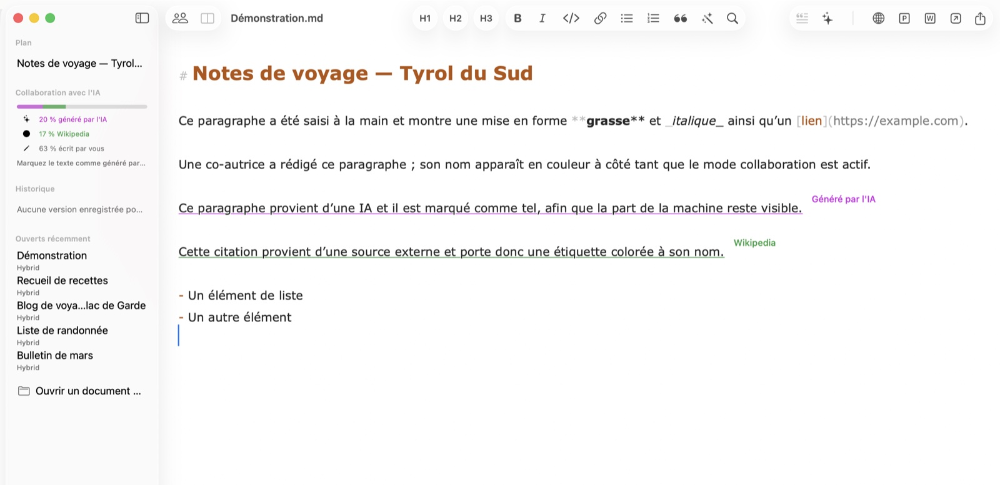
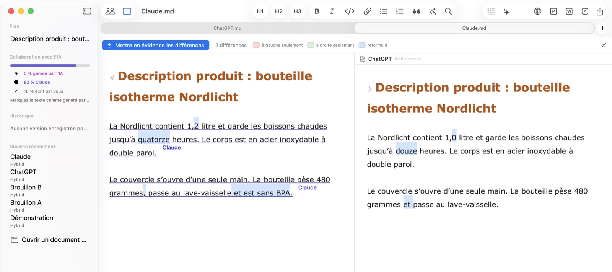
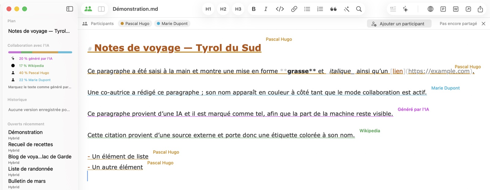
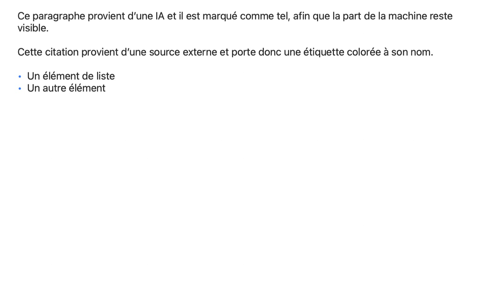

Publication en ligne en un clic
Copie votre document en HTML mis en forme avec images intégrées — prêt à coller dans WordPress et d'autres CMS. Les images restent exactement à leur place, pas de liens cassés.
Hybrid pour macOS
Hybrid retient l'origine de chaque passage : écrit par vous, généré par une IA, cité d'une source nommée ou apporté par un collègue. Conçu pour celles et ceux qui publient — RP, marketing, agences et rédactions.
Bientôt disponible Hybrid arrive bientôt sur iPhone et iPad.

Chaque passage porte son origine — et la conserve à l'enregistrement, au partage et à l'édition à plusieurs. Ce registre voyage dans un simple fichier .md que tout autre éditeur peut ouvrir ; les étiquettes flottent au-dessus du texte et n'apparaissent dans aucun export.
Ce paragraphe a été tapé par vous — tout ce que vous écrivez compte automatiquement comme vôtre.
Ce passage provient d'une IA et il est marqué, pour que la part de la machine reste visible.Généré par IA
Cette citation provient d'une source externe et porte son nom en petite étiquette.Wikipédia
La promesse centrale : ce que quelqu'un a apporté lui reste attribué — même si l'accès est retiré plus tard. La provenance dit qui a écrit, pas qui a le droit d'écrire aujourd'hui.
La même question a été posée à deux outils d'IA, et les réponses se ressemblent au premier regard. Hybrid met en évidence leurs différences et les compte. Donnez à chaque réponse le nom de son outil comme source : même après la fusion, on sait encore quelle phrase vient d'où.

Partagez un document via iCloud Drive : chaque passage affiche le nom de son auteur en étiquette colorée. Les modifications des autres apparaissent en quelques secondes, sans que le curseur ni le défilement ne bougent. On invite via la fenêtre de partage d'Apple — Contacts, Mail ou Messages.

Titres, listes, vraies tableaux et images intégrées, rendus comme vos lecteurs les verront. L'aperçu suit votre frappe en direct dans sa propre fenêtre — idéal pour vérifier un texte avant le CMS.

Copie votre document en HTML mis en forme avec images intégrées — prêt à coller dans WordPress et d'autres CMS. Les images restent exactement à leur place, pas de liens cassés.
Envoyez votre texte en un clic à ChatGPT, Claude, Perplexity ou l'app de votre choix. Marquez les passages IA et lisez la part de chaque contributeur dans la barre latérale.
Les documents sont de purs fichiers .md que tout éditeur peut ouvrir. Tout ce que Hybrid sait en plus — provenance, versions, auteurs — voyage dans un seul commentaire invisible.
Déposez une photo dans le texte : elle est redimensionnée, convertie et référencée en Markdown. Un fichier CSV ou Excel devient un tableau mis en forme.
Hybrid enregistre des états intermédiaires pendant que vous écrivez. Chaque état peut être consulté et restauré — rien ne se perd, même si vous changez d'avis.
Verrouillez l'app immédiatement ou automatiquement après inactivité. Verrouillé veut dire verrouillé : fenêtres masquées, exports désactivés — jusqu'au déverrouillage par Touch ID.
Partout où un texte naît de plusieurs mains — humaines et machines —, Hybrid garde les origines au clair.
Rédigez des communiqués avec l'appui de l'IA en gardant chaque citation vérifiable. Quand on demande ce qu'un humain a écrit, votre document a la réponse — la transparence comme méthode, pas comme rattrapage.
Beaucoup de plumes, une seule voix. Voyez la part de chacun, comparez les brouillons côte à côte et livrez un HTML propre à n'importe quel CMS — tout le flux de contenu sur votre Mac.
Séparez vos propres mots des sources et des suggestions d'IA. Les sources nommées restent attachées à chaque paragraphe — à travers les corrections, les versions et l'édition partagée.
Les rapports co-écrits avec l'IA ont besoin d'une piste d'audit. Hybrid consigne qui — ou quoi — a écrit chaque passage, et le verrouillage Touch ID garde les brouillons confidentiels fermés.
Comparez les sorties de modèles côte à côte, mesurez la part d'IA d'un document et conservez prompts et résultats en Markdown propre — lisible dans tout outil.
Du Markdown au CMS en un clic : du HTML mis en forme avec les images exactement à leur place. Plus l'export PDF, Word et Markdown pur.
Hybrid arrive bientôt sur iOS. Les mêmes documents, la même provenance — en mobilité. D'ici là, vos fichiers restent du Markdown pur dans iCloud Drive, lisibles sur chaque appareil.
Hybrid existe en neuf langues : français, anglais, allemand, espagnol, italien, portugais, néerlandais, japonais et chinois simplifié — et ce site aussi.
Hybrid pour Mac — l'éditeur Markdown pour les humains, l'IA et tout ce que vous publiez.
macOS 13 (Ventura) ou ultérieur · Apple Silicon & Intel